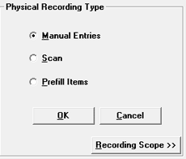
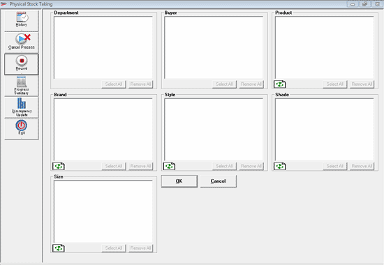
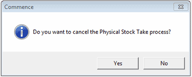
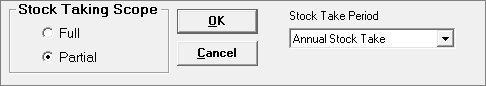

Physical Recording Type
The recording of Physical Stock can be done in any of the following manners:

Manual Entries: If Manual Entries is selected then the stock numbers are manually entered through direct keyboard Data Entry of the Physical Stocks.
Scan
Stock numbers are scanned using Bar-Code scanner connected to the computer where Shoper 9 is installed.
Stocks are recorded using Hand-Held Data Capture Unit (DCU) and the recorded data is then down loaded (imported) from DCU to the computer where Shoper 9 is installed.
Prefill Items: All the items available in Shoper 9 are populated from the system and the stock quantity for each is entered referring to the Stock Sheets manually prepared.
Note: The Prefill Items option will be disabled if the Batch/Grade/Location or Item Tag options are enabled.
Recording Scope
Using the recording scope, user-wise scope can be defined.
This recording scope is the subset of the physical stock taking scope defined currently.
This recording of scope is done for the individual section for entering the itemdetails into the system.
If a user is assigned a specific recording scope, then that user can enter the itemonly related to that assigned scope.
Click to define the recording scope.

Select the required values under different categories.
Cancel Process: To cancel the physical stock taking process and the following message is displayed.


Refresh: To include the newly added items (present in the defined scope), in the stock take process.
View Partial Scope List: To view the list of items under the defined partial scope. You can view this option only when Partial Stock Taking Scope is selected.